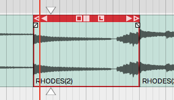
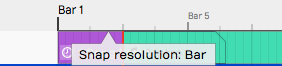

Selecting and Snapping¶
This chapter covers selecting clips and groups of clips, snapping them to the bars and beats of your song, and nudging them. The examples use Audio clips and MIDI clips, but most of the techniques also apply to Step clips, Edit clips and markers.
Selecting a Clip¶
To select a clip, click it. The clip is highlighted and its properties appear in the Actions panel.

A Selected Clip
Auditioning a Clip¶
To audition a clip, double-click it. Playback starts where you double-clicked. Click within the clip to jump to a new spot as playback continues, and click anywhere outside the clip to stop. Moving pointers above and below the clip show the playback position.

Audio Clip Being Auditioned
Auditioning solos the clip: everything else in the Edit is muted while it plays.
Selecting Multiple Clips¶
To select more than one clip, hold Cmd / Ctrl and click each clip you want to add to the selection.

Multiple Clips Selection
With several clips selected, you can work on them as a group, for example dragging, duplicating or deleting them. Clip editing is covered in Audio Clips and Editing Audio. To clear a multiple selection, press Esc.
You can also make a multiple selection with the lasso tool:

Multiple Selection with Lasso
- Hold Opt / Alt until you see a plus cursor.
- Drag to draw a yellow box. Anything the box touches is selected.
💡 Tip: To refine a multiple selection, hold Cmd / Ctrl and click any clip you want to deselect.
Shift Selecting Clips¶
Shift-select is a quick way to select a run of adjacent clips:
- Select the first clip.
- Hold Shift and click the last clip. This selects the first clip, the last clip and all the clips in between.
Shift-select works for clips on a single track and across several tracks.
💡 Tip: Shift-select also works for many other kinds of Waveform object, including Browser lists and tracks.
Deselecting Clips¶
Press Esc at any time to deselect everything.
💡 Tip: Esc also clears selections of other objects, such as plugins and tracks.
Working With a Marked Region¶
A marked region is a time range drawn across one or more tracks. By default, dragging across an empty part of the tracks area draws one over the tracks you drag across. If you've set the tracks area to select clips instead (see Mouse settings), hold Shift + Opt / Shift + Alt while you drag. Shift + Opt / Shift + Alt dragging in the Timeline marks every visible track. Drag either edge of the region to resize it, and Cmd-click / Ctrl-click a track within its time span to add or remove that track.
Right-click inside the region to open its menu. Most commands act only on the clips that overlap the region on the tracks it covers. Delete Time and Insert Time change the whole Edit. Launcher clips are always left alone.

The marked region menu
- Cut (Cmd + X / Ctrl + X): Copies the parts of clips inside the region to the clipboard and removes them, leaving a gap.
- Copy (Cmd + C / Ctrl + C): Copies the parts of clips inside the region to the clipboard.
- Crop: Trims each overlapping clip so only the part inside the region is left.
- Ripple delete (Cmd + Backspace / Ctrl + Backspace): Deletes everything inside the region on its tracks, automation included, and moves later clips on those tracks left to close the gap.
- Split: Splits the overlapping clips at both edges of the region.
- Insert MIDI Clip (G) and Insert Step Clip: Add a new clip that fills the region on each of its tracks. If a track is selected, the clip goes on the selected track instead. Only shown when you right-click a track that can hold MIDI.
- Heal: Renders the Audio clips that overlap the region on each track into one Audio clip, running from the start of the first to the end of the last.
- Consolidate: Renders the audio inside the region on each track into one Audio clip exactly the length of the region.
- Duplicate (D): Copies the parts of clips inside the region and pastes them straight away, in the place Paste would put them (usually the cursor), not directly after the region.
- Reverse: Reverses the part of each Audio clip inside the region, splitting the clip at the region's edges first.
- Silence: Mutes the part of each clip inside the region, splitting the clip at the region's edges first.
- Delete Time: Removes the region's time from the whole Edit (every track, automation, and tempo and pitch changes), so everything after it moves earlier.
- Insert Time: Inserts empty time the length of the region at its start, across the whole Edit, pushing everything after it later.
- Set loop to marked region (A): Sets the loop range to match the region.
- Insert automation shape: Draws a repeating Sin, Square, Triangle, Ramp Up or Ramp Down shape into the region on the automation curve the track is showing. Only shown when you right-click a track with an automation curve visible. See Editing Automation.
📝 Note: Heal, Consolidate and Reverse only work on Audio clips. MIDI and Step clips in the region are skipped.
Using Snap-to-Grid¶
Snap-to-grid lines clips and notes up with musical time, so you can align them quickly and accurately.
Enable/Disable Snap-to-Grid¶
To turn snap-to-grid on or off, click the Snap button (Q) in the transport bar. The button is highlighted while snap-to-grid is on. Right-click the Snap button to open the Snap menu, with Snap-to-grid, Snap clips to other clips and Snap cursor movement.

Snap button in the transport bar
Pressing Q also toggles Snap, and so does Snap > Snap-to-grid in the main menu.
💡 Tip: The shortcut Q is short for quantise, since snap-to-grid is a form of quantising. You can remap it to another key if you like.
About Snap Resolution¶
The snap resolution depends on the zoom level. Zoomed right out, it might be one bar, and the further you zoom in, the finer it gets.

Hover Over Timeline to See Snap Resolution
💡 Tip: To see the current snap resolution, hover the mouse pointer over the Timeline. A label appears showing, for example, Snap resolution: Bar, Snap resolution: Beat, or Snap resolution: 1/2 beat.
Snapping Clips to the Grid¶
As you drag a clip, it snaps to the grid increments. To see exactly where it lands, watch the Start value in the Actions panel.

The clip's Start value in the Actions panel
📝 Note: Snap-to-grid aligns the beginning of a clip with a grid line. Snapping also applies to editing operations such as trimming.
Snapping the Cursor to the Grid¶
Snapping can also affect the cursor. Turn on Snap > Snap cursor movement and the cursor snaps to the grid, at the resolution set by the zoom level.

Snap cursor movement in the Snap menu
To try it, zoom out until the snap resolution is "Beat", then move the cursor around. It snaps to the nearest beat.
💡 Tip: To see exactly where the cursor is, look at the time display in the transport bar.
Snapping Clips to Other Clips¶
Snap clips to other clips is another snap behaviour. With it off, clips snap to the grid as normal. With Snap > Snap clips to other clips turned on, clips snap to other clips, as if they were magnetically attracted to each other. This is useful whenever you want to arrange clips end to end, for example when editing voiceover tracks.

Snap Clips to Other Clips Option
💡 Tip: Snap clips to other clips only works while snap-to-grid is on. To snap clips to other clips with snap-to-grid off, hold Opt / Alt while you drag the clip. Press it after the drag has started, because holding it as you start the drag makes a copy of the clip. With snap-to-grid on, holding Opt / Alt or Shift during the drag does the opposite: the clip snaps to the grid but not to other clips. Here you hold the key while dragging a clip, unlike the Opt / Alt lasso, which starts on an empty part of a track.
Overriding Snap-to-Grid¶
Hold Cmd / Ctrl while you drag to override snap-to-grid temporarily. You can then position clips freely without turning Snap off.
Nudging Clips¶
To move clips with the keyboard, select them and press Shift + Right Arrow or Shift + Left Arrow. Each nudge moves the clips by one grid increment. To nudge clips from track to track, use Shift + Up Arrow and Shift + Down Arrow.
Nudging is handy for moving large selections of clips over, for example to add a song section or make room for an intro.
📝 Note: Nudging works the same whether snapping is on or off: it always moves by the grid increment.
Nudging Notes¶
Snapping is useful with Audio clips, and even more so with MIDI notes. MIDI editing has its own chapter, MIDI Editing, but here is a preview of nudging notes.

The Waveform MIDI Editor
Double-click the header of a MIDI clip to open it in the MIDI editor in the Detail Editor. MIDI notes respect the snap resolution just like clips: drag a note and it snaps by the current grid increment, for example a bar. To nudge notes earlier or later by the grid increment, hold Shift and press the Left Arrow or Right Arrow.
Moving On¶
To start editing Audio clips, see Audio Clips and Editing Audio.